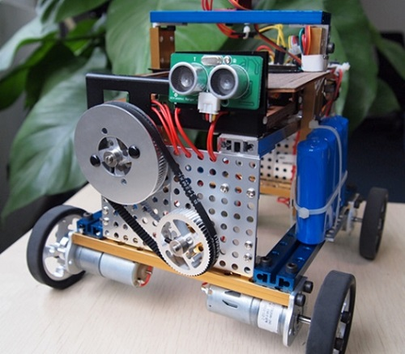
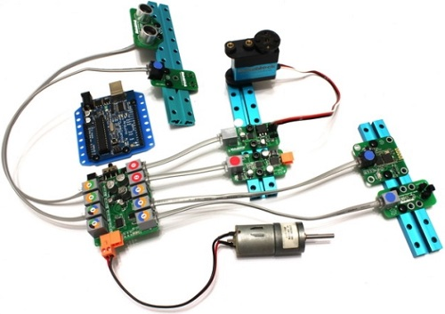

開源機器人 Makeblock

◎本文原載 Linux Pilot，原文章連結按此。
開源硬體 Arduino 相信大家都聽過了，但對於像一般對電子零件沒有認識的人來說，縱使有開源的硬體在手，也難以藉此開發出一些什麼新產品， Makeblock 的出現將打破這種局面。

眾所周知 Arduino 其實是一塊電路板，上面有各種各樣的接口，但這些接口的用途並沒有在外表標明，必須讓用戶自己去查閱多次說明書才能了解，對沒有電子相關知識的用戶而言，這是一個極大的障礙。 Makeblock 團隊所做的工作，便是在 Arduino 上加入一塊擴展板，將 Arduino 原有的接口引出來，並用顏色註明用途。通過這樣的改造，消費者能夠明確了解 Arduino 上面接口的定義，以正確的方式跟各種各樣的模組相連，如果想加入藍牙模組、速度計等硬體，只要用普通的電話線與 Arduino 連接毫可以了。

Makeblock 是一個利用鋁合金打造的機器人積木平台，可以讓用戶自行搭建各式各樣的機器人，加上電源和作為控制晶片的 Arduino ，再上一點簡單的程式碼，一個開源機器人便可完成。 Makeblock 的特點是在輕便、有足夠靈活度、有強大擴展性的同時，還能提供足夠結構強度。這點十分重要，如果大家曾經玩過塑膠模型的話，你便會發現一些標榜可以「變形」的機械人當組合完成後站不穩，或者支架沒有足夠的強度，這種情況在加入其他額外部件時尤其嚴重。從 Makeblock 可以加入不同部件組合成不同用途機械人這一點來看， Makeblock 似乎已經克服這個難題了。
Makeblock 之前在 Kickstarter 上成功募集資金，現在已經開始出貨，聽聞 Makeblock 的團隊是一群來自中國的開發者，期望他們可以在外國人的世界創出一片新天地。